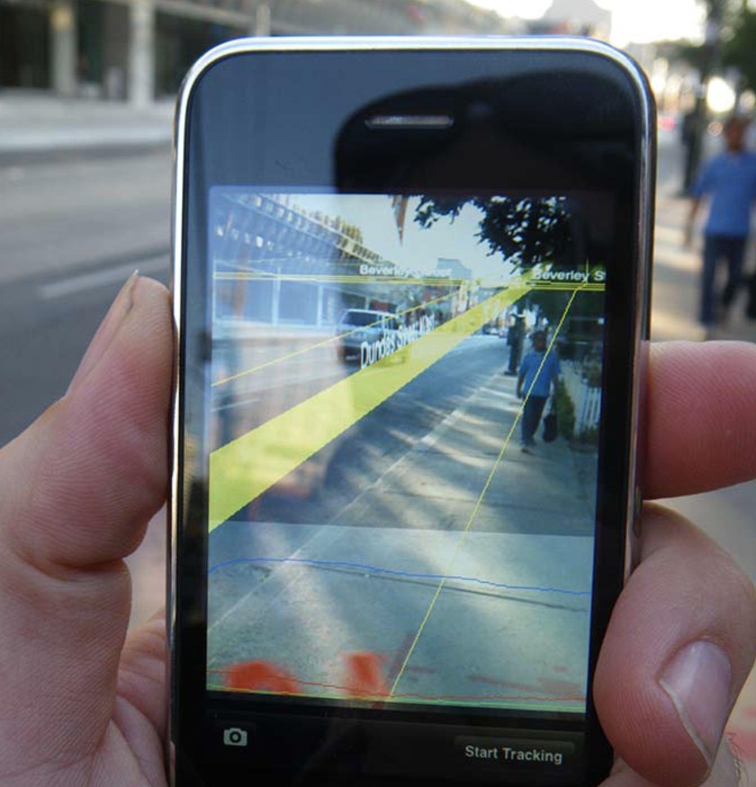
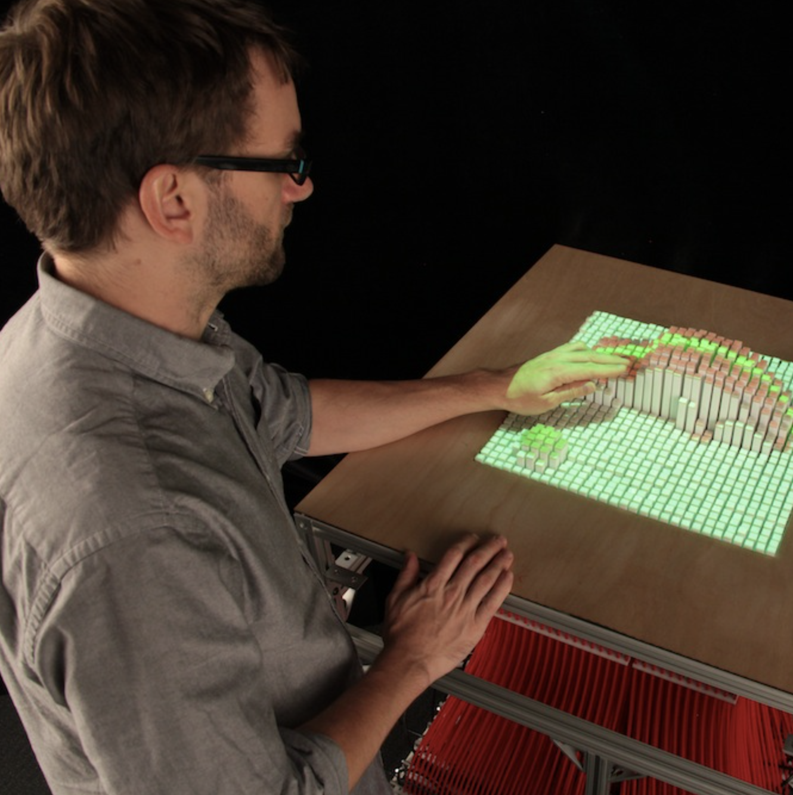
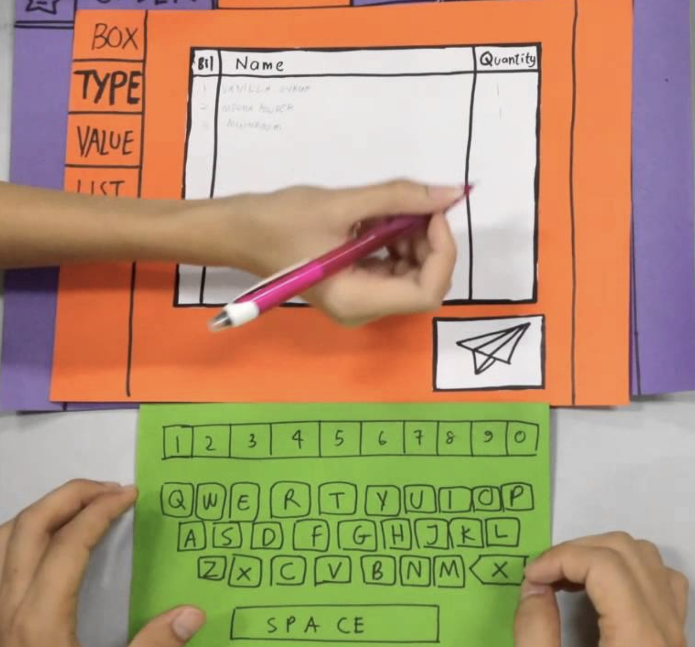

|  |  |  |
This course provides an introduction to several major areas of research in Human-Computer Interaction (HCI). It is based in a combination of readings and discussion that span HCI research contributions, methods, and focus areas. The course readings will require preparing reports on a combination of historic framing papers and more current results. This will help you examine what the HCI community considers a meaningful contribution across a variety of problems, thus helping prepare you to understand and make meaningful contributions in these and other areas of HCI. Coursework will include short written discussion of the readings, a final project, a take-home exam, and a short stats exercise The course project will require hands-on experience with HCI, while remaining open to different possibilities. You might choose to design and implement a new piece of HCI technology, or you might choose to design and execute an appropriately compelling study with HCI research implications. We will emphasize open discussion and feedback in all aspects of the course.
| prerequisites | There are no prerequisites for this class. The final project does not necessarily have to involve programming, but will require competency in working with and designing for digital artifacts. If you are unsure about your background please come talk with me. Grad students from other departments with the appropriate background are welcome! |
| textbook | There are no required textbooks. All readings will be posted on the class Canvas site. |
| grading | Grades in this course will be determined by:
Much of the grading in this course is necessarily subjective. We will attempt to communicate expectations and feedback throughout the course, but it is your responsibility to communicate with us if you would like guidance in this regard. |
| cheating policy | School of Computing Policy Statement on Academic Misconduct |
| acknowledgments |
This course is based off James Fogart's excellent course at UW: Advanced Topics in HCI. |
| readings |
Assigned readings will focus on research topics, generally consisting of:
You are expected to read: (1) the historical framing paper, and (2) either of the more current papers (in other words, whichever seems more compelling or interesting to you). You obviously may choose to read all three. The lectures will link to the assigned readings on Canvas and provide any day-specific revisions to this reading structure. You are expected to have read and considered the assigned readings prior to class, as the in-class discussions are a critical component of this course. Written Discussions Your discussion should not be a summary of the reading. Instead, you should focus on the following four points, with a section header for each point:
The discussions are due no later than 9:00am on the date in which a reading is to be discussed. Discussions turned in after the deadline will not be graded, except for compelling reasons. You will turn in your discussion in PDF format using Canvas -- a link will be posted in the lectures along with the readings. GradingWe will coursely grade your discussions on a scale from 0 to 3.
|
| project |
A course project will be a major component of your work. This will require hands-on experience with HCI, while remaining open to different possibilities. Because you are still new to HCI research, we do not necessarily expect you to produce publishable work. Instead, the expectation is that you will do something interesting. It is then up to you to define interesting according to what you want to accomplish in this project, seeking appropriate feedback from the teaching staff. For example, you might choose to:
We expect most students will do projects in groups of two. We will very strongly discourage individuals. Working in groups is a necessary part of doing research, and also important for the logistics of this course. Early FeedbackCourse staff will be available to meet and provide early feedback on Tuesday Sept 5th and Thursday Sept 7th. Meeting is optional. Sign up for the reserved meeting times. Project DeliverablesProject deliverables are defined in terms of a proposal, a pair of self-defined milestones, and a final report. These are due:
Your proposal will define your initial plan for this project. You can and should update this plan based on feedback, progress, and findings. But the proposal needs to demonstrate a robust initial plan for your project. You are welcome and even encouraged to align your project with your research goals outside this course. However, it is critical to define what you will specifically accomplish in the course project. The course project must stand on its own. Proposals consist of a short document and a short in-class presentation. Document: Prepare a 1-page document addressing the following points:
Presentation: Prepare a 5-minute presentation consisting of 3 to 4 slides. Each group will give a short in-class presentation of their proposal. This is an opportunity for feedback from staff and classmates. Your presentation should cover the same information as the document. This is an opportunity for feedback, not a formal presentation. Please be appropriately candid, thoughtful, and engaged. Submission: Uploaded your proposal document by midnight on Tuesday, Sept 26, 2017. Presentations are in class on Wednesday, Sept 27, 2017. Only one person on the project team needs to submit the document and slide deck. Submit your proposal document in PDF format. Submit your proposal presentation in PDF, KEY, PPT, or PPTX format. Milestone ReportsTwo milestone reports serve as a check on the trajectory of your project and an opportunity for feedback and guidance from staff and classmates. Convey the state of your project and your plans for the remainder of the semester. Milestone reports consist of a short document and a short in-class presentation. Document: Prepare a 1-page document addressing the following points:
Presentation: Prepare a 10-min presentation consisting of 5 to 6 slides. Each group will give a short in-class presentation of their proposal. This is an opportunity for feedback from staff and classmates. Your presentation should cover the same information as the document. This is an opportunity for feedback, not a formal presentation. Please be appropriately candid, thoughtful, and engaged. Submission: Upload you milestone documents on Sunday, Nov 5, 2017 and Sunday, Dec 3, 2017. The milestone presentations will take place on: Monday, Nov 6 and Wednesday, Nov 8; and Monday, Dec 5 and Wednesday, Dec 7. Submit your milestone documents in PDF format: Submit your mileston presentation in PDF, KEY, PPT, or
PPTX format: Prepare a final report that is 4 to 10 pages in length, excluding references. Your final report should be presented in the same general structure as the papers you read this semester:
Write according to the content you have. Be
appropriately thorough and precise in your presentation,
but do not needlessly pad your text. Format your report
according to the SIGCHI
Document Format. Additional guidance regarding effective paper writing
can be found in: Submission: Uploaded you document by Monday, Dec 11, 2017. Submit your final report document in PDF format on Canvas. |
| statistics lab |
To aid in developing necessary skills, you will complete a statistics lab in R or JMP. The lab will walk you through analyzing an example data set, and you will then analyze two datasets from published research papers. You may work through the lab with a partner, but you must complete the write-up on your own. If you do work with a parnter please include their name in the write-up. You will gain basic familiarity with analyzing experiments using mixed‑model analyses of variance. Consistent with lecture, this assignment is not intended to provide complete knowledge of how to design or analyze experiments, which is far beyond the scope of two lectures or an assignment. This assignment is instead focused on a pragmatic introduction to analyzing experiments based in designs you might later find useful. Please consider this assignment in the context of the material covered in lecture, as not all of it is repeated here. In addition to the lecture material and the contents of this assignment, you might benefit from working through the first four sections of Jacob Wobbrock’s independent study in Practical Statistics for Human-Computer Interaction. We will hold a discussion session about the independent study and how to conduct it in JMP and R. This independent study provides the background necessary for the lab if you do not already have a strong stats background. The discussion session will take place on Monday, Sept 25th from 4:30-6:00pm in the Evans Conference Room, which is the large room on the south end of WEB on the 3rd floor. Additionally, Sam will hold office hours on Monday, Oct 16th to answer questions about the lab. The office hours will be 4:30-6:30pm in the Meldrum conference room (2nd floor of WEB). Download Submit |
| exam |
A take home exam will give you an opportunity to demonstrate and apply your understanding of course material in a more substantial format. It requires you to connect concepts across papers, serving as an evaluation of your understanding and critical thinking about course concepts. If you have kept pace with the readings, you will find this exam much easier to approach. You may reference any of the articles, slides, notes, or other material readily available on the web. You may consult the course staff with any questions, but you must fully complete the exam on your own. Download Submit |
| required | none |
| recommended |
- Jonathan
Grudin. A Moving Target - The Evolution of Human-Computer
Interaction. Book Chapter. |
| discussion | none |
| slides |
introduction.pdf |
| required |
- Darren
Gergle, Desney Tan. Experimental Research in HCI. from Ways of Knowing in HCI. 2014. |
| discussion | submit on Canvas |
| slides |
experimental-design-1.pdf |
| required |
- Katie
Siek, Gillian Hayes, Mark Newman, John Tang. Field
Deployments: Knowing from Using in Context. from Ways
of Knowing in HCI. 2014. |
| discussion | submit on Canvas |
| slides |
interviews.pdf |
| required |
- Virginia
Braun, Victoria Clarke. Using thematic analysis in
psycology. Qualitative Research in Psychology 2006. |
| discussion | submit on Canvas |
| slides |
thematic-analysis.pdf |
| guest |
Prof. Jim Agutter,
Multi-disciplinary Design Program |
| slides |
| guest |
Prof. Erik Brunvand, School of Computing |
| required | Browse the projects posted on the website
Art and Electronic
Media, by Ed Shanken. Pick two projects that you
find particularly compelling and write a short paragraph
about each explaining what is interesting and why you like
it. Submit these paragraphs for your discussion (you do
not need to cover the regular discussion points). |
| discussion | submit on Canvas |
| slides |